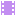

08 · Prática
O ITEM LARGADO NO MUNDO
Repare no que não vamos fazer: uma cena para a poção, outra para a chave, outra para a espada. É uma cena só. O que muda é o ItemData que ela recebe na gaveta do Inspector.
Scene
WorldItem
Sprite2D
Inspector
WorldItem.gd
Data
potion.tres
WorldItem.gd
●●●
extends Area2D
class_name WorldItem
@export var data : ItemData
@onready var sprite : Sprite2D = $Sprite2D
func _ready() -> void:
if(!data):
push_error("WorldItem: data wasn't set.")
return
# a aparência vem do dado, não do editor
sprite.texture = data.iconA linha que faz a mágica é a última Você não escolhe o sprite no editor: o item lê o próprio ícone do dado que recebeu. Arraste
key.tres na gaveta e a mesma cena vira uma chave.11 · Prática
ONDE ISSO ENTRA NO PLAYER
Scene
Player
Sprite2D

AnimationPlayerInputComponent
MovementComponent
VisualComponent
InventoryComponent
Nenhuma linha do Player mudou O
Player.gd continua exatamente como estava. O inventário é uma peça nova, encaixada ao lado das outras, que não interfere em ninguém. É esse o retorno de ter separado a lógica em componentes lá atrás.O nome do Node importa aqui O
WorldItem procura por get_node_or_null("InventoryComponent"). Se você renomear o Node na árvore, precisa mudar a string também — senão a coleta para de funcionar e nenhum erro aparece.E o inimigo? Se um dia quiser que um inimigo carregue itens e os derrube ao morrer, é só arrastar o mesmo
InventoryComponent para dentro dele. A peça não sabe nem se importa com quem a carrega.